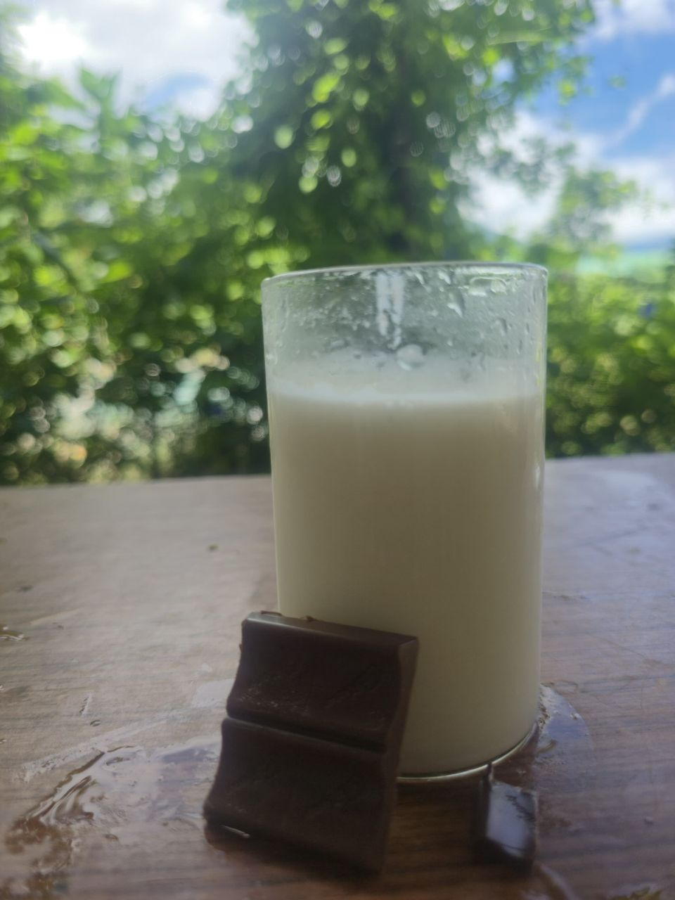

The Richness of Chocolate Lassi
The Positive Impact of Chocolate Lassi
More than just a delicious treat, our Chocolate Lassi combines the health benefits of both yogurt and cocoa, offering a delightful way to nourish your body. Here’s how it can positively impact you:
- Probiotic Power: The primary ingredient, yogurt (dahi), is a rich source of probiotics, the "good bacteria" that are vital for a healthy gut. A balanced gut microbiome is essential for smooth digestion, improved immunity, and overall well-being.
- Mood Booster: Chocolate contains compounds like tryptophan, which helps the brain produce serotonin—the "feel-good" hormone. A glass of our Chocolate Lassi can lift your spirits and act as a natural stress-reliever.
- Antioxidant Rich: Cocoa is packed with flavonoids, powerful antioxidants that help protect your body's cells from damage. These antioxidants are known to support heart health and reduce inflammation.
- Bone & Muscle Health: Lassi is an excellent source of calcium and protein from yogurt. Calcium is crucial for strong bones and teeth, while protein is essential for muscle repair and growth.
How We Make Our Lassi: The Traditional Indian Method
While our flavors are modern, our method is rooted in tradition. Here is a simple guide to how a traditional Indian lassi is made, ensuring a creamy and authentic texture:
- Choose the Curd: The foundation of any great lassi is thick, chilled, and fresh yogurt (dahi). We ensure our curd is of the highest quality for that perfect creamy consistency.
- The Blending Process: The curd is added to a large blender or, for a more traditional touch, churned with a hand-held wooden churner called a "madani." This process breaks down the curd lumps and gives the lassi its signature smooth and frothy texture.
- Adding the Goodness: We then add our high-quality chocolate and a touch of sweetness. The ratio of ingredients is carefully balanced to ensure the perfect blend of tanginess and rich chocolate flavor.
- Chilling and Serving: The lassi is blended until it's perfectly smooth and frothy. It is then poured into a tall glass, often garnished with chocolate shavings or roasted almonds, and served chilled for a refreshing experience.
Our Pricing Policy: Why Our Lassi is Priced Just Right
The price of our lassi is not just a number; it reflects our commitment to quality and fairness. We decide our price based on several key factors:
- Cost of Premium Ingredients: We use fresh, high-quality dahi (yogurt), pure cocoa, and other premium ingredients. The cost of these quality components is the largest factor in our pricing.
- Handcrafted Process: Our lassi is not mass-produced. The time and care taken to prepare each batch using traditional methods contribute to the final price, ensuring you get a product made with love.
- Local Market & Competition: We analyze local market prices for similar premium beverages to ensure our pricing is competitive yet sustainable.
- Overhead Costs: This includes the cost of our establishment, equipment, and the hard work of our staff. We believe in providing fair wages and maintaining a clean, welcoming environment.
Our goal is to offer a product that is not only delicious and healthy but also a true value for your money. We believe our ₹80 price for Chocolate Lassi is a fair reflection of the quality and care we put into every glass.